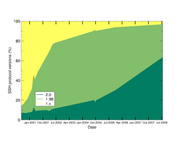
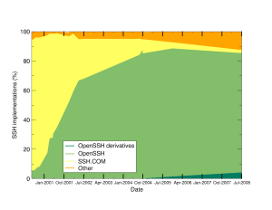

Главная
Статистика
Графики
ScanSSH

Графики последних измерений
|

|

|
Распространение SSH
Эта машина используется для сбора статистики об используемых в интернете версий Secure Shell (SSH). Этот проект очень похож на Netcraft Web Server Survey. Мы собираем и сопоставляем информацию о случайно выбранных узлах в сети, а именно об используемых ими SSH-серверах, т.е. подключаемся к каждому из них, чтобы определить тип и версию SSH-демона, а так же версию используемого им SSH-протокола. Полученные результаты будут опубликованны в виде статистики использования протокола SSH в сети интернет в целом. Мы намерены опубликовать наши результаты в интернете и на предстоящей конференции Usenix.
Мы не собираемся делать что-то большее, чем беглый и поверхностный взгляд на вывод при подключении к Вашему SSH-серверу. Сканер не будет пытаться войти на Вашу машину. Никакие повторные соединения к Вашей машине установленны не будут, поскольку сканер выбирает только случайные адреса в сети.
Никакой информации об адресах или доменах никому вне проекта передаваться не будет. Мы не будем публиковать никаких подробностей о том, какие узлы работают под управлением какой версии.
Статистику, полученную на основании результатов сканирования, можно найти тут. Сканирование проводилось при помощи scanssh.
This site Copyright © 2001-2006 OpenBSD.
$OpenBSD: index.html,v 1.2 2012/12/16 07:54:13 ajacoutot Exp $